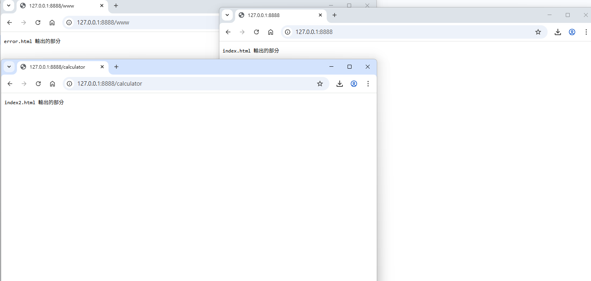
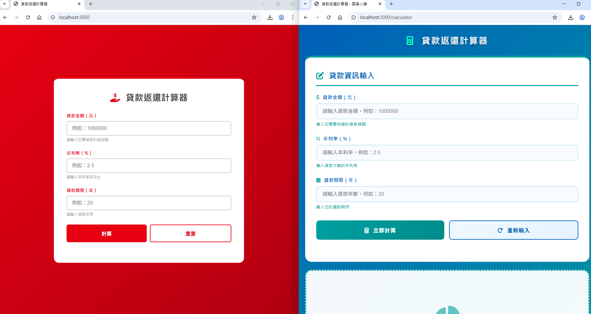
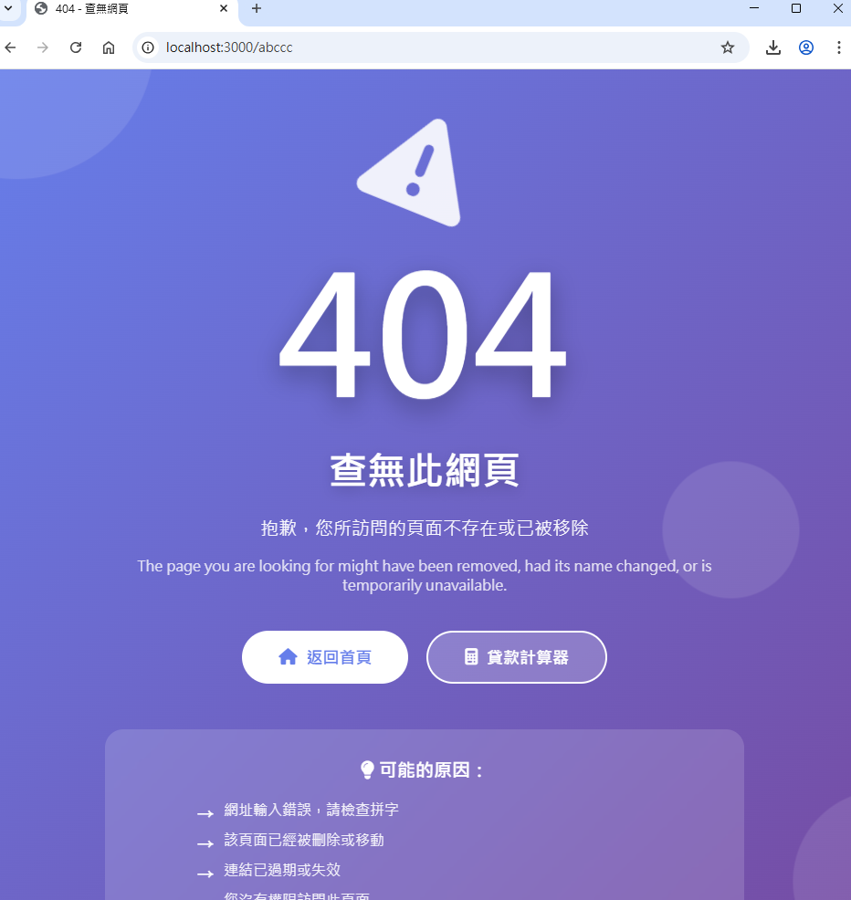

學號：112111136 (學號和姓名都要寫)
姓名：張紘齊
本份文件包含以下主題：(至少需下面兩項，若是有多者可以自行新增)
開始寫說明，該說明需說明想法，
並於之後再對上述想法的每一部分將程式進一步進行展現，
若需引用程式區則使用下面方法，
若為.cs檔內程式除了於敘述中需註明檔案名稱外，
還需使用語法```語言種類 程式碼 ```，其中語言種類若是要用python則使用py，java則使用java，C/C++則使用cpp，
下段程式碼為語言種類選擇csharp使用後結果：
public void mt_getResult(){
...
}
若要於內文中標示部分網頁檔，則使用以下標籤```html 程式碼 ```，
下段程式碼則為使用後結果：
<%@ Page Language="C#" AutoEventWireup="true" ...>
<!DOCTYPE html>
<html xmlns="http://www.w3.org/1999/xhtml">
<head runat="server">
<meta http-equiv="Content-Type" ...>
<title></title>
</head>
<body>
<form id="form1" runat="server">
<div>
</div>
</form>
</body>
</html>
更多markdown方法可參閱https://ithelp.ithome.com.tw/articles/10203758
請在撰寫"說明程式與內容"該塊內容，請把原該塊內上述敘述刪除，該塊上述內容只是用來指引該怎麼撰寫內容。
Ans: name:為名稱 項目是keyboard mouse monitor usb cable stock:為項目的數量
Ans:其輸出結果須以下面格式顯示:
Ans:承b:

Ans:如下圖: 
Ans:
Ans:同b 
Ans: